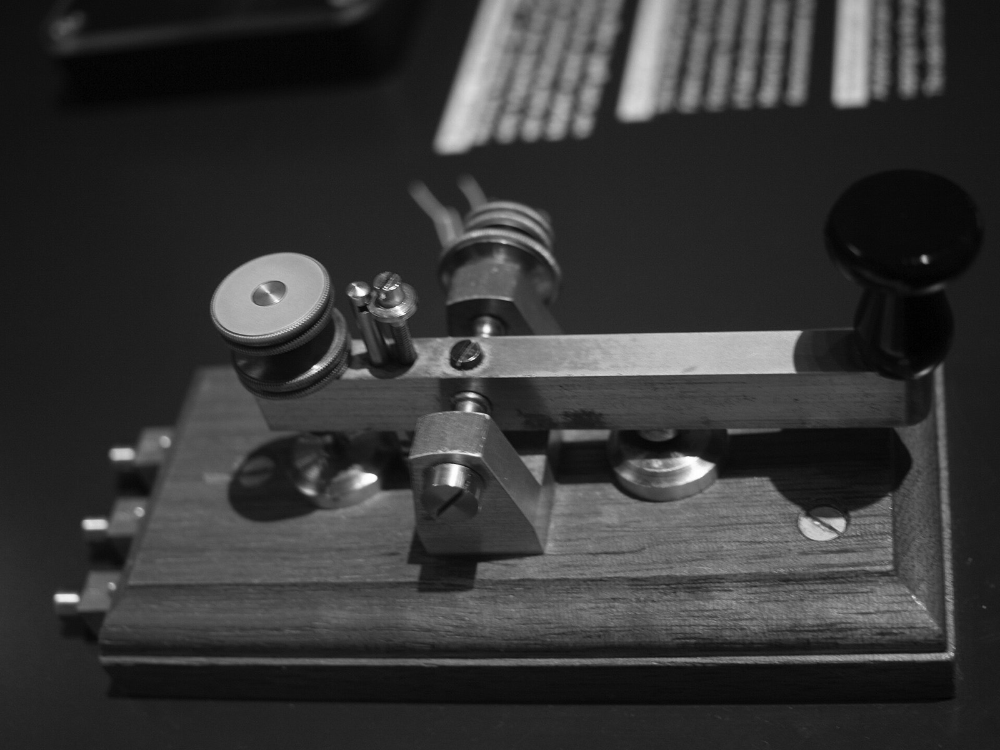
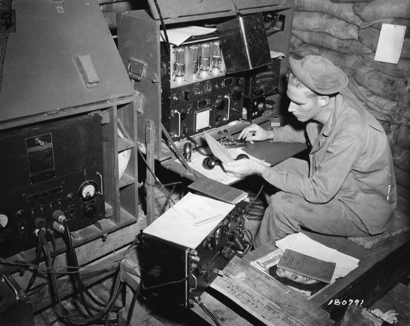
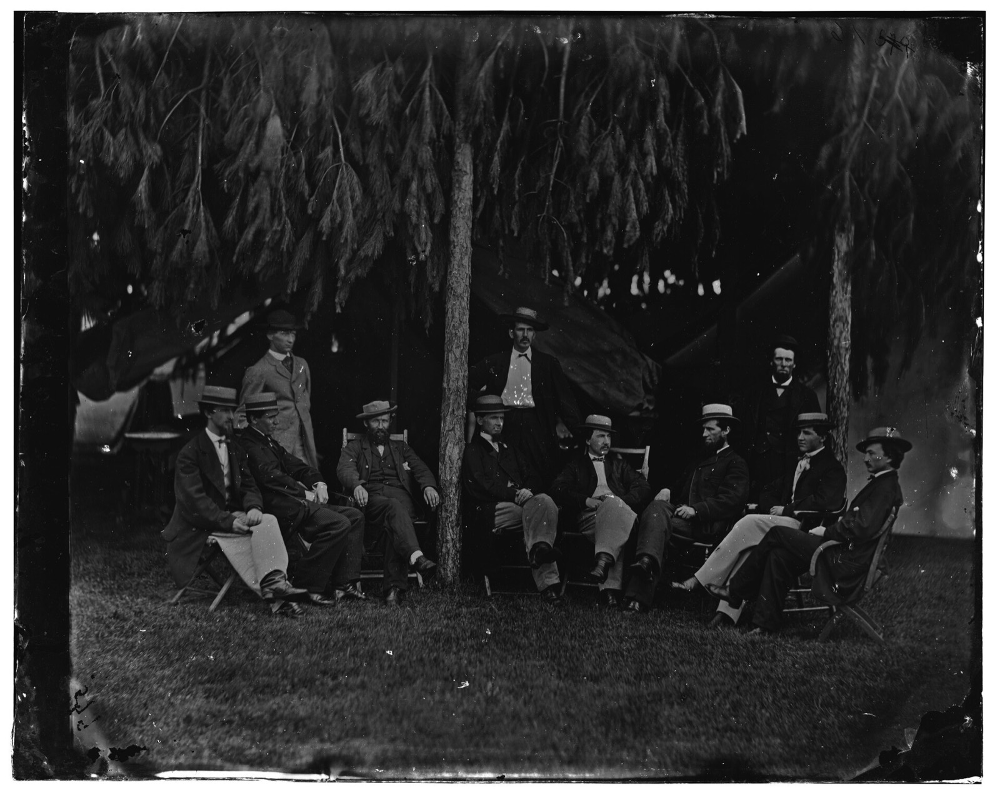

Learn Morse code by ear
Five free courses take you from your first two letters to your first radio contact. Ten minutes a day, in your browser, no account.

Five courses, one path
Each course is a set of short classes you can finish in one sitting. Pass a class and move to the next. You can jump ahead any time.

Practice like you're at the radio
Short games and tools for the days you want to drill instead of following a class.
One unit of time runs the whole code
Every sound and silence is a multiple of one short unit. Speed in words per minute means how many times you could send the word PARIS in a minute.
PARIS drawn to scale, 50 units including the space after it. At 20 WPM one unit lasts 60 milliseconds.

Taught by ear since the 1840s
Samuel Morse sends "What hath God wrought" over a line from Washington to Baltimore.
SOS is adopted as the distress signal at the Berlin radiotelegraph convention.
The US drops the Morse test for amateur radio licenses. People keep learning it because they want to.
Questions
How long does it take?
At 10 to 15 minutes a day, most people know every letter by sound in 6 to 8 weeks. A first real contact usually comes around three months in. Daily short sessions matter more than long ones.
Do I need a radio?
No. Every course and tool here runs in your browser. You only need a radio, and a license, to talk with other operators on the air. The Guide explains how to get there.
Is it free? Do I need an account?
It's free and there's no account. Your progress is saved in the browser you use, so stick to one device or it starts fresh on the other.
Does it work on my phone?
Yes, in Safari or Chrome. In Safari, tap Share and then Add to Home Screen to keep it like an app. After your first visit it also works offline. If you hear nothing on an iPhone, check the silent switch.
Why by ear and not from a chart?
If you picture dots and dashes, your brain translates twice, sound to picture to letter. That caps most people near 10 words per minute. Learning each letter as a sound skips the picture.
What speed should I use?
Keep letters near 20 words per minute from day one and lower the overall speed instead. That adds silence between letters while each letter keeps its real sound. Change it any time under Sound.